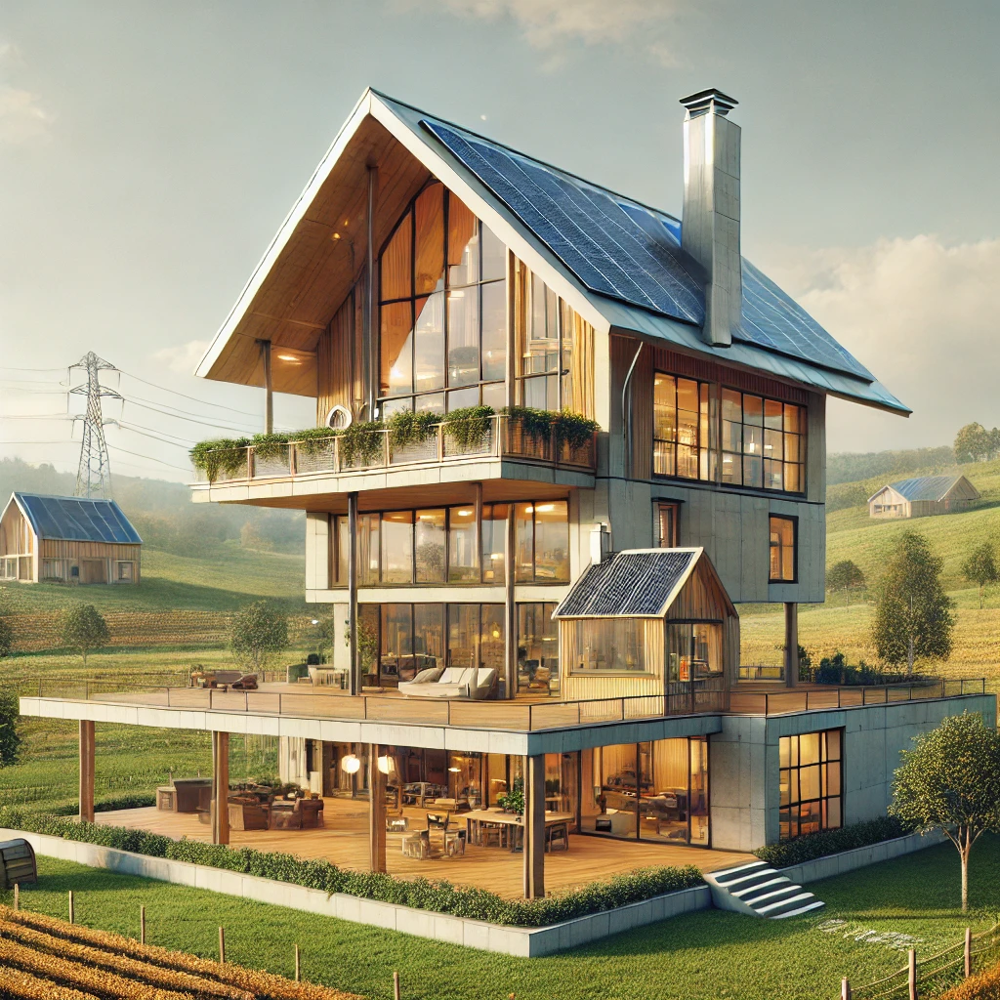

The Rural Oasis, is a futuristic home concept that blends cutting-edge technology with the serenity of nature. Nestled in a vast, green landscape, this self-sustaining house is designed to harmonize with its rural surroundings while offering the highest level of modern convenience.
Solar-Powered Roof: Integrated solar panels designed to curve with the roof, maximizing energy production.
Vertical Wind Turbines: Silent, small-scale turbines generate additional renewable energy without impacting the aesthetics.
Smart Glass Windows: Adjustable transparency for panoramic views or privacy at the touch of a button.
Rainwater Harvesting System: Captures and filters rainwater for household use.
Permaculture Garden: A self-sustaining, eco-friendly garden that surrounds the home, providing fresh produce and supporting local ecosystems.
Smart Home Systems
Smart Home Systems: Smart thermostats that adjust temperature based on external conditions and personal preferences.
Voice- or Gesture-Controlled Systems: Manage lighting, climate, security, and entertainment with voice commands or hand gestures.
Smart Security System: Features facial recognition, biometric access, and remote monitoring capabilities for enhanced safety.
AI-Powered Home Management: Artificial intelligence integrated into the home system for energy optimization, scheduling, and management of household tasks.

The Rural Oasis offers a blend of luxury, sustainability, and cutting-edge technology, ensuring it is both a modern and environmentally conscious home.